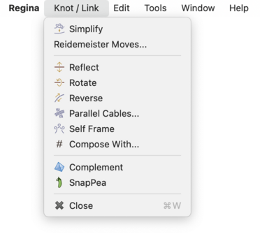
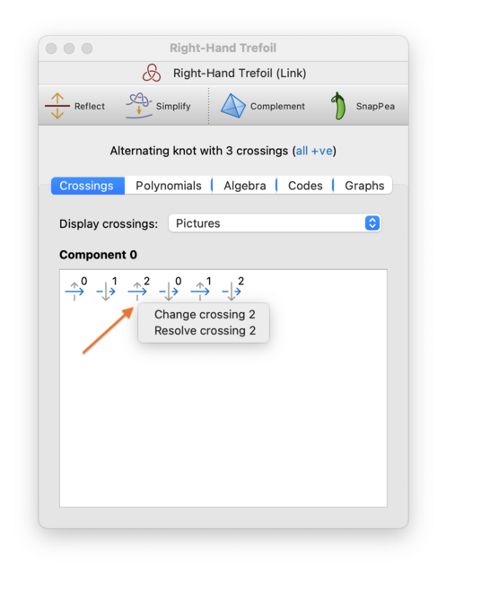
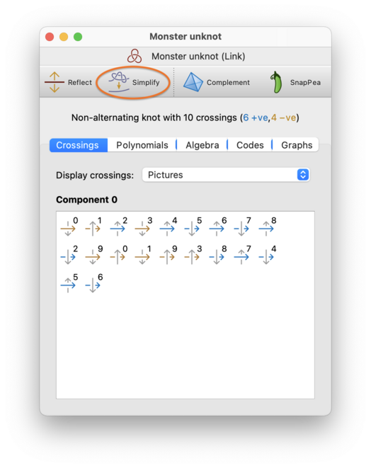
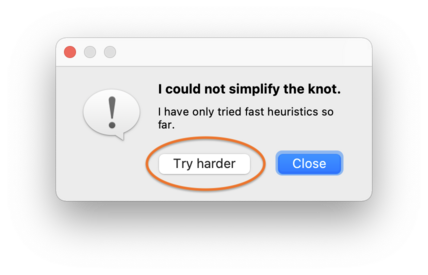
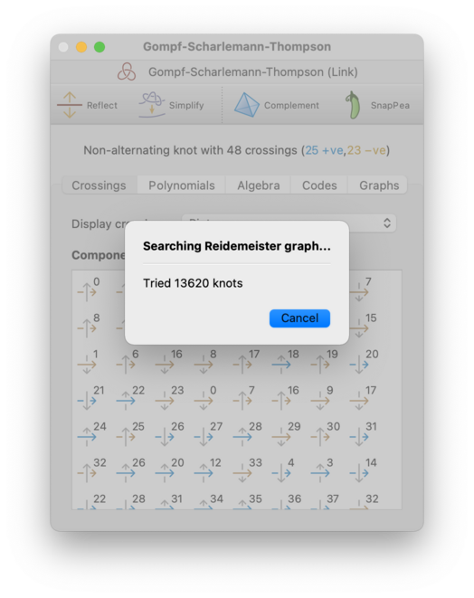
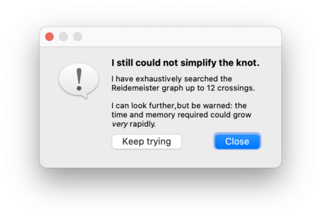
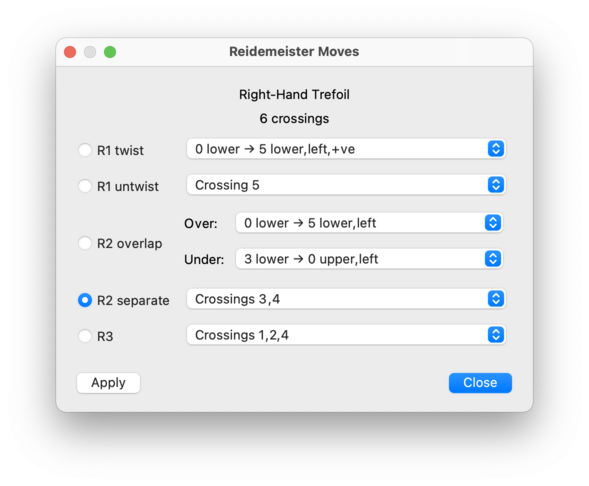
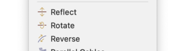
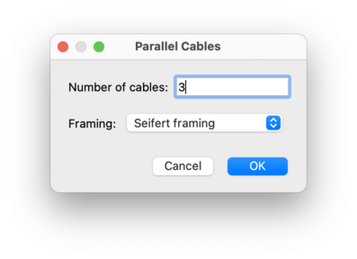
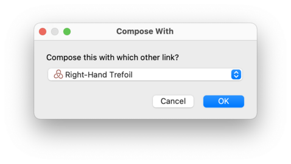

Modification | |
| Prev | Knots and Links | Next |
There are several options for modifying a link diagram. Many of these can be found in the menu, which appears when you open a link for viewing.

Caution
If you open one link for viewing but then select another in the packet tree, all modifications will apply to the link that you have open for viewing.
You can edit a link directly by altering its individual crossings. Regina gives you two ways do this, both of which will typically change the topology of the link:
- Changing a crossing
This involves switching the over-strand with the under-strand; in other words, passing one strand through the other.
This operation is sometimes called switching a crossing.
- Resolving a crossing
This removes the crossing entirely by chopping and splicing the over-strand and the under-strand together. Suppose the crossing originally involved strand
xpassing over strandy. After resolving the crossing, the section of the link that entered alongxwill exit alongy, and the section that entered alongywill exit alongx. This will be done in a way that preserves orientation (i.e., the directions of the arrows).This operation is sometimes called splicing a crossing.
To change or resolve a crossing, switch to the Crossings tab, right-click on the crossing you want to change, and choose which operation you wish to perform.

On computers where right-click is not supported (e.g., computers with a one-button mouse), you should use the normal secondary-click mechanism for bringing up a pop-up context menu.
Regina offers a number of local moves (including the well-known Reidemeister moves) for modifying a link diagram without changing the underlying link. If you press the button (or select →), then Regina will use a combination of these moves to reduce the link to as few crossings as it can. This procedure is always fast and works well in many scenarios, but there is no guarantee that this will produce the fewest possible crossings: Regina might get stuck at a local minimum from which it cannot see how to escape.

Note
This fast simplification process will never reflect or reverse your link. This is not true of the exhaustive process described below.
If Regina cannot simplify the link immediately using its fast heuristics, and if your link has only one component (i.e., you have a knot), then it will offer to perform a slower, more exhaustive search. Press the Try harder button, as shown below:

At this point, Regina will begin an exhaustive search through the Reidemeister graph (this is essentially the graph that relates all diagrams of the underlying knot through Reidemeister moves):

You can stop this search at any time by pressing the Cancel button.
Since the Reidemeister graph is infinite, Regina will only search through intermediate knots with a certain maximum number of crossings. If this still fails, it will offer to search further, and you can press Keep trying to continue the search using larger intermediate knots than before. This cycle of ever-expanding searches will continue for as long as you like: Regina will only stop if you decline to keep searching, or you cancel a search while it is running, or it finds a smaller knot diagram than the one it began with.

Warning
When searching the Reidemeister graph, both the time and memory consumption grow at a super-exponential rate relative to the number of crossings. If you continue to press Keep trying over and over, you may well run out of time or memory (or both).
Warning
Unlike the fast simplification process when you first press the Simplify button, this exhaustive simplification process could well reflect or reverse your link.
Tip
If your aim is to recognise a knot, an alternative is to build the knot complement and then try to recognise the resulting 3-manifold instead. The 3-manifold tools in Regina are much richer, and in particular Regina's simplification of 3-manifold triangulations works extremely well in practice. For the 141-crossing Gordian unknot, building the complement will detect unknottedness immediately, since Regina is typically able to reduce the complement immediately to a one-tetrahedron solid torus.
Instead of using automatic simplification, you might wish to modify your link manually one step at a time. You can do this using Reidemeister moves, which are small local modifications to the link diagram that preserve the topology of the underlying link. To perform Reidemeister moves, select → from the menu.
This will bring up a box containing all the Reidemeister moves that can be performed upon your link.

For each type of move, you will be offered a drop-down list of locations at which the move can be performed. If a move is disabled (greyed out), this means there are no suitable locations in your link for that move type.
Select a move, and then press to perform it. You may continue to apply one move after another. When you are done, press to close the Reidemeister move box.
The available moves are:
- R1 twist
Introduces a small local twist in a strand of the link. Each option in the drop-down list specifies a strand (described as an arrow between two crossings), which side of the strand to twist on (left or right, as viewed when facing the direction of the arrow), and the sign of the new crossing that will appear (positive or negative).
- R1 untwist
The opposite of an R1 twist. Each option in the drop-down list corresponds to a crossing where a local twist is found (this corresponds to the new crossing introduced by an R1 twist move).
- R2 overlap
Takes two strands that border the same cell in the link diagram, and passes one over the other. This move comes with two drop-down lists, marked Over and Under, and you need to select your strands in this order.
First, use the Over list to choose which strand will pass over the other; each option in this list specifies both the strand (as an arrow between two crossings) and in which direction it will be pushed (left or right, as viewed when facing the direction of the arrow). This will cause the Under list to be re-filled with compatible strands that can be pushed under the first, and now you can select one of these options also.
- R2 separate
The opposite of an R2 overlap. Each option in the drop-down list describes a pair of crossings that are connected by a pair of strands that can be pulled apart (these correspond to the two new crossings introduced by an R2 overlap move).
- R3
Passes a strand of the link over a nearby crossing. This move takes place around a triangular cell in the link diagram, and each option in the drop-down list corresponds to the three crossings that surround this triangle.
Regina offers some simple transformations related to orientation: each of these changes will alter the knot diagram, but the knot signature will stay the same.

If you select → from the menu (or press the Reflect button on the toolbar), Regina will reflect your link about an axis in the plane. Each crossing will change sign (positive becomes negative and vice versa), but over-crossings will remain over-crossings, and under-crossings will remain under-crossings.
If you select → from the menu, Regina will rotate your link about an axis in the plane (like turning a sheet of paper over so the back becomes visible). This means that over-crossings will become under-crossings and vice versa, but the sign of each crossing will remain the same.
If you select → from the menu, Regina will reverse the orientation (i.e., direction of traversal) of every component of your link. Both the sign (positive or negative) and the side (under or over) of each crossing will remain the same, but each component will walk through its crossings in reverse order.
You can convert a link into k cables
of the link, all parallel to each other using a chosen framing.
This will effectively:
treat each component of the original link as a ribbon, using the chosen framing;
create
kparallel copies of the original link, following each other side-by-side along these ribbons.
Your link will be modified directly.
To do this, select →. from the menu.
You will be asked to choose the number of cables k,
as well as the framing to use.

The number of cables should be an integer greater than one (but not too large—see the warning below). The framing may be one of:
- Seifert framing
This framing is a property of the underlying link (i.e., it does not depend on your specific choice of link diagram). One way to imagine it is to construct a Seifert surface (an orientable surface embedded in the 3-sphere whose boundary is the link), and then place the ribbons so that they sit flat upon this surface.
Another way to imagine it is purely algebraic: for each component
Cof the link, each edge of the corresponding ribbon follows a curve with trivial homology in the complement of the knotC.- Blackboard framing
Here each ribbon sits flat in the plane of the link diagram, with no twists. This framing depends on the specific link diagram that you are using.
Warning
This operation can increase the number of crossings enormously.
If you create k cables then you will
multiply the number of crossings by
k2,
and if you chose the Seifert framing then there may be even more
crossings due to twists in the ribbons.
Use a large k at your peril!
To self frame a link means to add any necessary twists (i.e., Reidemeister 1 moves) to ensure that each individual component has zero writhe.
To do this, select → from the menu.
Your link will be modified directly.
You can combine two links using the operation of
composition.
This will convert some link L
into the composite link
L # M
for some other link M
(note that
M is allowed to be the same as
L).
The composition operation will respect the orientations (i.e.,
directions of traversal) of each link.
To form this composition, first open the the link
L for editing;
this is the link that you are operating on, and it will be
modified directly.
Then select
→
from the menu.
Regina will ask you which other link to compose with;
in other words, Regina will ask you for the link
M.
This second link M will be
left unchanged (unless of course you have chosen to compose
L with itself, which is perfectly legal
and will work as expected).

The link L will be changed directly
into the resulting composite link.
| Prev | Contents | Next |
| Analysis | Up | Importing and Exporting Data |